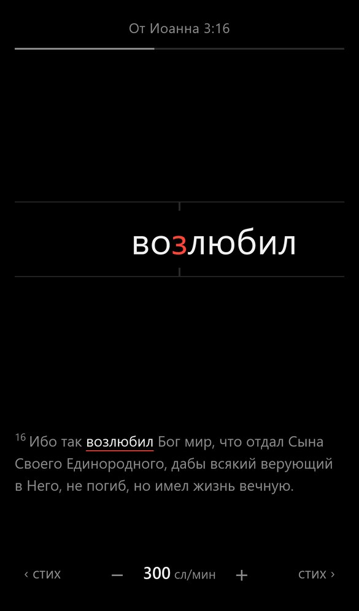

Это приложение для чтения Библии в режиме скорочтения по методике RSVP (быстрый последовательный показ слов).

Слова появляются по одному в центре экрана. Держите палец на экране - текст идёт, отпустили - пауза.
При обычном чтении глаза прыгают от слова к слову, останавливаются, иногда возвращаются назад. На эти движения уходит заметная часть времени. Здесь слова сами приходят в одну точку, и глазам не нужно двигаться.
В каждом слове одна буква выделена красным. Это точка, на которую взгляду удобнее всего опереться, чтобы узнать слово целиком. Красная буква всегда стоит на одном месте, поэтому взгляд не ищет начало следующего слова.
Ритм подстроен под текст:
Начните с 250-300 слов в минуту. Если смысл ускользает - убавьте скорость: понимание важнее числа.
Синодальный перевод, 66 канонических книг. Работает без интернета. Другие переводы - в планах.
Откройте скачанный файл. Если телефон спросит, разрешите установку из этого источника. Новые версии приходят сами, скачивать файл заново не нужно.
Откройте страницу приложения в Safari → «Поделиться» → «На экран Домой». Так приложение работает без интернета и не теряет прогресс.
Есть идея или нашли ошибку - напишите мне в Telegram: @artem_krotkov
Приложение бесплатное и без рекламы. Если оно вам помогает и вы хотите поддержать его развитие финансово, напишите мне в Telegram: @artem_krotkov
Приложение не просит регистрации и не знает, кто вы.
Прогресс, история и настройки хранятся только на вашем устройстве. Чтобы перенести их на другой телефон, используйте «Сохранить прогресс в файл».
Чтобы понимать, как пользуются приложением, оно отправляет анонимную статистику в Google Analytics:
Google Analytics также определяет примерную страну и город по интернет-адресу. Реклама и рекламное отслеживание отключены.